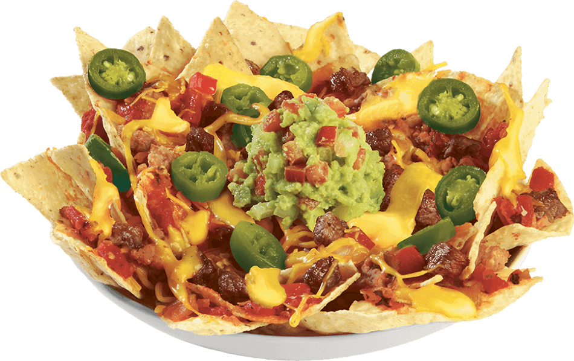

Back Home
Nachos

Description
Live the bachelor lifestyle dream with this simple but tasty dish. Crack a beer and turn up the game because it's about to get cheesy in here!
Ingredients
- Chips/li>
- Cheese
- Jalapenos
- Refried Beans
Steps
- Put the chips onto your plate
- Add cheese on top of the chips
- Add Jalapenos
- Add refriend beans
- Put in the microwave on high for 90 seconds